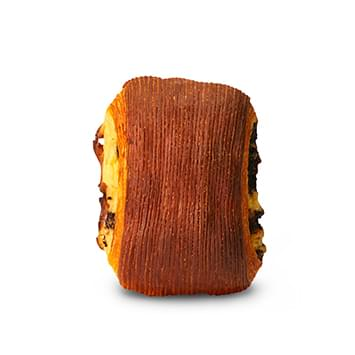
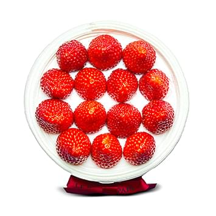
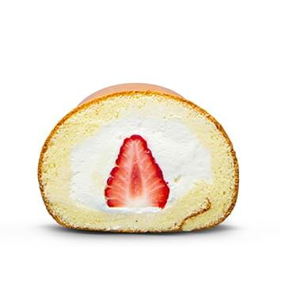
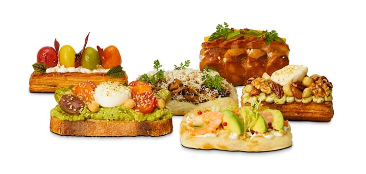

Products
프리미엄 재료, 최고의 기술력, 건강까지 고려한 르빵의 시그니처 제품
하드빵
Hard Bread
- 바게트 Baguette Tradition
- 르빵의 영혼을 상징하는 빵. 르빵의 바게트는 10여 년 동안 이어온 발효종을 넣어 만듭니다. 이 발효종에는 발효 활성도가 우수하고 빵에 탁월한 풍미를 선사하여 특허를 취득한 균주가 숨을 쉽니다. 프랑스 정통 바게트의 제법을 추구하며 프랑스산 밀가루와 게랑드 소금, 자가발효종, 물을 배합하여 구워냅니다. 반죽을 장시간 저온 숙성하여 소화가 편하며 맛이 뛰어납니다.
- Tip : 버터를 올려 드시면 가장 맛있습니다.

- 깜빠뉴 Pain de Campagne
- 프랑스 정통 제법을 구현하여 만든 식사 빵. 깜빠뉴는 길을 함께 가는 동반자라는 의미를 지닙니다. 화학첨가제, 비타민C, 효소 등의 첨가제는 일절 없이 빵의 본질을 지키는 마음으로 장시간 저온 숙성한 반죽으로 굽습니다. 씹을수록 구수한 맛과 밀 본연의 감칠맛이 살아납니다. 바게트와 더불어 프랑스 빵의 진가를 즐길 수 있습니다.
- Tip : 식사 빵으로 좋습니다.
- 치아바타 Ciabatta
- 이탈리안 정통 레시피를 추구한 식사 빵입니다. 겉은 바삭하고 속은 촉촉하고 쫄깃하며 전체적으로 부드러운 식감을 지니기에 남녀노소 누구나 즐길 수 있습니다. 엑스트라버진 올리브유로 고급스러운 풍미를 살리고 폴리쉬 반죽과 저온 숙성법으로 밀의 감칠맛을 최고조로 끌어올린 빵이며 기본을 중시하는 르빵의 철학이 담겨있습니다.
- Tip : 샌드위치 베이스로 좋습니다.
- 무화과 크림 치즈 Fig Cream Cheese
- 부드러운 곡선의 모양을 한 이 빵은 발효의 풍미, 과실의 달콤함, 치즈의 녹진함이 하모니를 이룹니다. 국내산 무화과를 듬뿍 넣어 한입 먹으면 달콤한 과실 향이 터져 나옵니다. 그 사이로 크림치즈가 깔리면서 입안을 부드럽게 마무리합니다. 프랑스 밀을 사용한 겉바속촉의 빵을 쫄깃쫄깃 씹다 보면 풍성한 황금빛 가을 속에 빠져드는 느낌입니다.
- Tip : 화이트 와인에 곁들이시면 좋습니다.
- S-빵 Le Pain S
- 르빵의 상징처럼 불리는 이 빵은 맛있고 소화가 잘되며 영양이 풍부하기로 유명합니다. 그 이유는 반죽을 오버 나이트, 장시간 냉장 숙성시켜 소화가 잘 되고 빵의 풍미를 끌어올립니다. 올리브, 마카다미아, 바질 페이스트, 크랜베리 등을 배합하여 S자 보양으로 성형하여 굽습니다. 바게트 반죽 배합으로 담백하고 구수한 풍미가 흐르며 씹을수록 입에 침이 고이는 맛과 멋을 겸비한 빵
- Tip : 구입한 날 바로 드시는 것을 추천합니다.
- 통밀 무화과 Whole wheat Fig
- 베이커의 손과 정성과 시간으로 만든 아침의 빵. 반죽기 대신 손 반죽하여 글루텐이 덜 잡히도록 하고 통밀의 영양과 풍미를 손실 없이 빵에 녹여냈습니다. 직접 레드 와인에 마리네이드 한 무화과는 고급스럽고 호두, 피칸, 건포도가 고소함에 달콤함까지 선사합니다. 저온으로 장시간 숙성시킨 빵이기에 드시고 나서도 속이 편안합니다.
- Tip : 아침의 식사 빵으로 좋습니다.
- 명란 바케트 Poutargue Baguette
- 르빵의 자부심인 바게트에 명란과 르빵만의 특제 소스의 풍미를 담았습니다. 바게트는 10여 년 동안 이어온 발효종을 넣어 굽기에 겉은 바삭하고 속은 촉촉하며 깊은 감칠맛이 있습니다. 빵 속에 풍부하게 담긴 명란과 마늘, 파슬리가 어우러진 소스는 느끼함을 잡아주고 짭짤하면서도 고소한 맛이 일품입니다. 체다치즈를 비롯한 4종 치즈 토핑은 빵의 고급스러움을 더해줍니다.
- Tip : 맥주와 곁들이면 좋습니다.
단과자
Sweets Dough Bread
- 이화 주종 단팥빵 Ewhaju Redbeen Bread
- 국순당과 협업 하에 탄생한 이 빵은 고급 탁주인 이화주의 주종으로 발효하여 만듭니다. 누룩으로 발효하고 숙성시킨 반죽에는 다채로운 풍미가 스며들고 푸짐하게 넣은 국내산 팥과의 조화가 훌륭합니다. 한국인이 좋아하는 단팥빵의 전통을 살리면서 한 단계 업그레이드시킨 작품으로 남녀노소에게 오랫동안 사랑받는 베스트셀러입니다
- Tip : 냉동보관 후 해동하면 원래의 맛이 살아납니다.
- 맘모스빵 Mammoth Bread
- 르빵 하면 떠오르는 스테디셀러 제품입니다. 전통적인 맘모스 빵을 르빵만의 고급감으로 재해석했습니다. 호두, 아몬드, 코코넛 등의 푸짐한 견과류, 빵 사이 타피오카 전분의 배합, 크림치즈/연유/커스터드 크림의 앙상블. 바삭함과 쫀득함, 꾸덕한 식감까지 즐기는 매력적입니다. 남녀노소 누구나 좋아하여 선물로도 인기가 높습니다. 르빵에 방문하셨다면 맘모스를 놓치지 마세요.
- Tip : 냉동 후 해동하면 아이스크림 같습니다.
- 솔트 브레드 Salt Bread
- 식사 빵으로도 디저트로도 인기가 높은 제품입니다. 르빵에서 직수입하는 콜만 버터를 듬뿍 넣고 미네랄이 풍부한 프랑스의 명품 게랑드 소금으로 구운 빵. 육즙처럼 뿜어져 나오는 버터의 풍미와 바삭한 식감, 고급스러운 감칠맛이 궁극의 맛을 연출합니다. 반죽에 쌀가루를 배합하여 겉바속촉의 쾌감을 즐길 수 있습니다.
- Tip : 냉동보관 후 구워 드시면, 겉바속촉 식감이 좋습니다.
- 월넛 브레드 Walnut bread
- 견과류의 맛과 영양이 가득한 빵입니다. 호두와 마카다미아 토핑이 빵만큼이나 푸짐하여 바삭바삭 씹는 식감이 경쾌하며 팥과 완두, 건포도가 폭신한 빵과 조화를 이룹니다. 저온 숙성한 빵이 소화를 편하게 하며 견과류의 영양이 풍부하여 먹으면 먹을수록 끌리는 제품입니다. 입안 가득 바삭함과 쫄깃함, 달콤함의 향연을 누려보세요.
- Tip : 아이의 영양 간식으로 좋습니다.
- 찹쌀 마블레 Sticky rice Marble
- 오곡밥을 짓는 마음으로 만든 식사 빵. 밀, 호밀, 귀리, 콩, 보리, 해바라기 씨, 아마 씨 등을 넣어 소화가 잘되도록 만든 빵에 국내산 찹쌀가루가 기분 좋은 쫀득함을 선사합니다. 완두 앙금, 완두콩, 호두를 듬뿍 넣어 먹는 재미를 더합니다. 바삭하고 쫄깃하며 소프트한 식감이 정겨운 빵. 두손에 들면 든든한 무게감이 마음마저 풍요롭게 합니다.
- Tip : 빵도 먹고 싶고 떡도 그리울 때
식빵
Loaf Bread
- 밤 식빵 Chestnut Bread
- 줄 서서 먹는 빵으로 유명한 르빵의 시그니처 제품입니다. 고객들께 행복함과 만족감을 드리고 싶은 르빵의 마음으로 푸짐하게 넣은 통밤은 타의 추종을 불허합니다. 달콤하고 크리스피한 소보루, 직접 조리한 통밤, 우유식빵의 촉촉함이 어우러져 한입에 먹었을 때 극상의 부드러움을 느낄 수 있는 식사 대용 빵입니다.
- Tip : 우유와 함께하면 환상의 궁합입니다.
- 우유 식빵 Milk Bread
- 오랜 시간 동안 사랑받는 르빵의 스테디셀러입니다. 우유식빵은 슬로우 푸드를 지향합니다. 물 대신 신선한 우유로 반죽하고 생크림이나 유지의 함량을 줄여 담백하면서도 촉촉하고 고소한 르빵 만의 레시피를 완성했습니다. 르빵의 발효종으로 발효하고 천천히 저온 숙성하여 먹고 나면 속이 편안해집니다. 고객의 행복과 건강을 기원하는 정성을 담았습니다.
- Tip : 과일잼과 곁들이면 좋습니다.
- 100% 유기농 통밀 식빵 100% Organic Whole wheat
- 건강한 식사 빵을 연구하며 완성도를 높여온 유기농 통밀 식빵입니다. 국내산 유기농 통밀을 천천히 발효하고 저온 숙성하여 통밀에 함유된 미네랄과 영양을 고스란히 담았습니다. 통밀빵이 뻑뻑하고 거칠 것이라는 고정관념을 탈피하고 촉촉하고 부드러운 식감으로 구워 냈으며 겉에는 귀리를 토핑하여 구수함과 영양을 두배로 업그레이드 했습니다. 씹을수록 구수한 통밀빵의 매력에 빠져보세요.
- Tip : 샐러드나 수프에 곁들이면 좋습니다.
- 브뤼오슈 식빵 Brioche Bread
- 고소하고 우아한 식사빵. 버터와 달걀이 넉넉히 들어가 프렌치토스트나 수프에 곁들이기 좋은 식빵입니다. 르빵이 직수입하는 콜만 버터의 풍미가 살아있고 신선한 달걀이 어우러져 황금빛 색감을 연출합니다. 겉에 토핑된 우박 설탕은 과하게 달지 않으면서도 빵에 달콤함과 경쾌함을 선사합니다. 이 빵 한 조각만으로도 풍성한 테이블이 될 수 있도록 맛과 영양을 담았습니다.
- Tip : 토스터에 구워 드시면 맛있습니다.
페이스트리
Pastry
- 크루아상 Croissant
- 베이커리에서 일반적으로 쓰이는 유지방 82~84% 판 버터 대신 르빵에서는 직수입하는 콜만 버터-유지방 99.9%의 버터를 사용하여 크루아상을 만듭니다. 버터의 고급스러운 풍미가 빵에 휘몰아치며 겉은 바삭하고 탄탄한 구조에 속살은 실크처럼 우아한 식감이 일품입니다. 초승달을 연상케 하는 클래식한 볼륨감은 밸런스를 추구하는 르빵의 스타일입니다.
- Tip : 아메리카노에 적셔 먹으면 좋습니다.
- 라우겐 크루아상 Laugen Croissant
- 파리지앵의 손에 크루아상이 있다면 베를리너의 손에는 라우겐이 있습니다. 이들 두 가지 국민 빵을 하나로 조화시킨 라우겐 크루아상. 기존 크루아상보다 버터 함량을 줄여 담백하면서도 라우겐 특유의 짭조름한 감칠맛을 더했습니다. 겉으로는 진한 브라운톤의 색감으로 바삭함이 경쾌하며 속은 황금빛 부드러움으로 물결치는 르빵만의 레시피를 즐겨보세요.
- Tip : 소금과 버터의 어우러짐이 포인트

- 뺑 스위스 Milk Bread
- 디저트로 즐기기 좋은 페이스트리. 바삭한 식감의 퍼프와 커스터드 크림의 풍미를 우아하게 느낄 수 있습니다. 맛의 비결은 겉은 바삭하고 속은 촉촉하게 구운 퍼프입니다. 입술 사이에서 경쾌하게 바스러지며 그 사이로 고소한 크림과 달콤 쌉싸름한 초콜릿이 어우러집니다. 사랑하는 연인의 포옹처럼 감미로운 황홀함을 느껴보세요.
- Tip : 출출할 때 간식으로 좋습니다.
- 뺑 오 쇼콜라 Pain Au Chocolat
- 볼륨감있게 구운 페이스트리에 진하고 감미로운 다크 초콜릿이 어우러집니다. 르빵에서 직수입 하는 콜만버터 – 유지방 100%의 판버터를 써서 고급스러운 풍미가 겹겹이 물결치고 프리미엄 퀄리티의 프랑스산 다크 초콜릿 스틱을 더블로 넣어, 그 어느 한 조각을 먹어도 만족하실 수 있도록 완성도 있게 만들었습니다. 과자와 빵 사이, 식사로 혹은 디저트로도 좋은 제품입니다.
- Tip : 커피에 녹여 드시면 달콤하면서 쌉싸름함이 좋습니다.
구움 과자
Petit Four

- 갈레트 브루통 Gallette Brutton
- 고메버터로 구운 갈레트 브루통은 프랑스 브루타뉴 지역의 전통 과자로서 오랜 시간 동안 사랑받고 있습니다. 버터의 고소함이 일품인데 달콤함과 짭조름함이 시소를 타며 말로 형언할 수 없는 황홀한 뒷맛을 남깁니다. 격자의 심플한 문양과 황금빛으로 어우러지는 도톰한 과자로 일상의 품격을 높여보세요.
- Tip : 홍차와 함께 오후의 티 타임에 좋습니다.
- 플로랑땡 Florentin
- 바삭한 쿠키와 아몬드 토핑이 어우러지는 프랑스 과자입니다. 플로랑땡은 이태리 피렌체를 뜻하며 프랑스의 루이 14세가 이태리 명문 메디치가를 위해 구운 과자로 탄생했습니다. 르빵은 클래식한 스타일을 추구하며 버터와 아몬드 파우더의 바삭한 쿠키 위에 생크림과 아몬드 슬라이스가 어우러지는 토핑을 올려 구워냅니다. 씹을수록 고소한 맛을 느껴보세요.
- Tip : 고급 과자로 선물용으로 좋습니다.
- 홍차 후리앙 Black Tea Hurian
- 쉬폰처럼 가볍고, 고소하여 티 푸드로 인기가 높은 프랑스 과자입니다. 휘낭시에는 버터를 태우지만, 후리앙은 녹이기만 하고 달걀노른자와 흰자, 아몬드 파우더가 더해져 고급스러운 맛을 자랑합니다. 르빵에서는 스리랑카산 홍차의 향을 진하게 블렌딩하여 구워냅니다. 버터의 고소함을 홍차가 깔끔하게 마무리합니다.
- Tip : 밀크티에 적셔 드시면 더욱 맛있습니다
- 맛나 피칸 Sweet Pecan
- 피칸의 고유한 고소함을 쿠키처럼 즐길 수 있게 만든 제품입니다. 최상급 피칸을 직접 로스팅하여 바삭한 식감과 고소함을 살렸습니다. 머랭으로 반죽한 후 오븐에 구워내어 입에 넣으면 사르르 녹아듭니다. 한 손에 오롯이 담기는 바삭한 달콤함. 밀가루가 소화가 안 되시는 분들까지 맛있게 즐기실 수 있도록 준비했습니다.
- Tip : 아이들의 영양 간식으로 좋습니다.
마들렌
Madeleine

- 마들렌 Madeleine
- 조개 모양에 배꼽이 볼록하게 튀어나온 프랑스 전통 과자입니다. 카스텔라보다 견고한 식감인데 촉촉함은 그 이상입니다. 르빵은 신선한 달걀을 듬뿍 넣고 꿀로 촉촉함과 달콤함을 더해 황금빛 마들렌을 완성했습니다. 유년의 향수를 불러일으키는 아름다운 풍미로 빠져보세요. 다양한 베리에이션 (레몬, 녹차, 초코)가 다채로운 즐거움을 선사합니다.
- Tip : 티 푸드, 선물용으로 좋습니다.
- 허니 마들렌 Honey Madeleine
- 촉촉하고 달콤하며 영양이 가득한 르빵의 허니 마들렌. 어머니가 아이를 사랑하는 마음을 담았습니다. 마들렌의 기본 레시피에 꿀을 배합하여 건강과 달콤함을 동시에 잡았으며 동그랗게 한 손에 오롯이 들어오는 촉감이 행복하게 느껴집니다. 가방에 하나씩 챙겨 두면 출출할 때 좋은 영양 간식. 입에서 사르르 녹아드는 맛이 환상적입니다.
- Tip : 남녀노소 누구에게나 선물용으로 좋습니다.
파운드
Pound
- 파운드케이크 (무화과, 얼그레이 후르츠, 캐러멜) Fig, Earl Gray Fruit, Caramel Pound Cake
- 영국에서 유래한 구움 과자로 밀가루, 버터, 달걀, 설탕이 배합된 녹진한 케이크입니다. 기본에 충실한 르빵의 파운드는 질 좋은 원재료의 맛이 돋보이며 촉촉한 식감과 세련된 풍미를 자랑합니다. 파운드케이크를 슬라이스 하여 부담 없이 커피나 차에 곁들일 수 있도록 준비했습니다. 다채로운 풍미 (무화과, 얼그레이후르츠, 카라멜)을 기분에 따라 즐겨보세요.
- Tip : 4~5일 냉장 보관해도 본래의 맛을 즐길 수 있습니다.
휘낭시에
Financier
- 휘낭시에 Financier
- 황금빛 금괴를 연상케 하는 프랑스 전통 과자입니다. 휘낭시에는 프랑스어로 '금융가를 뜻하며 부유함을 상징하는 선물로 인기가 높았습니다. 르빵의 휘낭시에는 황금색으로 구워진 버터의 고소함에 아몬드 파우더와 달걀흰자가 더해져 볼륨감 있으면서도 입에서 녹아드는 맛이 일품입니다. 다양한 베리에이션 (초코, 레몬)이 다채로운 즐거움을 선사합니다.
- Tip : 성공 기원 선물로 좋습니다.
케이크
Cake

- 딸기 생크림 케이크 Strawberry Cake
- 르빵이 자랑하는 시그니처 제품입니다. 딸기 중에서도 당도가 높고 향기로우며 단가도 비싼 귀한 품종 “장이 딸기”를 아낌없이 쌓아 올립니다. 입에서 살살 녹는 시트 사이에는 르빵의 노하우가 집결된 마스카포네와 커스터드 크림을, 겉에는 생크림을 아이싱하여 완성합니다. 입에서 솜사탕처럼 녹아드는 아름다운 케이크. (11월 중순~5월 말 한정)
- Tip : 홀 케이크와 조각 케이크로 준비되어 있습니다.
- 블루베리 케이크 Blueberry cake
- 블루베리와 크림의 완벽한 조화. 르빵만의 레시피로 완성한 마스카포네, 커스터드 크림과 요거트 블루베리 무스가 산뜻하게 어우러집니다. 농장에서 공수한 생블루베리를 듬뿍 넣고 블루베리 잼은 직접 조리하여 사용합니다. 새콤달콤하여 온몸에 퍼지는 행복감. 100% 동물성 생크림을 사용하여 건강에도 좋습니다.
- Tip : 항산화 성분이 눈의 피로를 풀어줍니다.

- 롤 케이크 Roll cake
- 생크림 케이크와 같이 르빵의 시그니처 크림을 적용한 롤 케이크입니다. 클래식 하면서도 입에서 사르르 녹는 크림에는 커스터드, 생크림, 바닐라 빈이 풍성하게 배합되어 있습니다. 케이크 시트는 고급스럽고 부드러우며 도지마롤을 연상시킵니다. 시트와 크림, 통 딸기가 연출하는 풍요로운 달콤함이 입에서 눈 내리듯 사르르 녹아내립니다.
- Tip : 아이들 영양 간식으로 좋습니다.
마카롱
Macaron
- 마카롱 Macaron
- 보석같이 아름다운 프랑스의 대표 과자 마카롱은 남녀노소 불문하고 사랑해 마지않는 디저트입니다. 머랭과 아몬드 파우더로 구워낸 동그란 크러스트 사이에 잼과 버터크림으로 만든 필링이 매력적입니다. 르빵의 마카롱은 달지 않으면서도 바삭하고 쫀득한 식감을 살렸습니다. 다양한 베리에이션 (피스타치오, 캐러멜, 바닐라, 산딸기, 초코, 코코넛, 마롱, 밀크티, 베일리, 레몬)으로 마카롱의 진수를 즐겨보세요.
- Tip : 파티 디저트로 좋습니다.
타르트
Tart
- 타르트 Tart
- 계절의 아름다움과 다채로운 풍미를 선사하는 타르트 제품군입니다. 기본적으로 바닐라 빈, 크림치즈, 연유, 생크림 등을 블렌딩하여 필링으로 채우고 제철 근거리에서 생산되는 싱그러운 과일을 토핑으로 올립니다. 타르트 지는 입에서 바삭하게 부서지며 버터의 고소한 풍미를 선사합니다. 한 손에 오롯이 들어오는 계절의 풍미를 즐겨보세요.
- Tip : 시즌 과일로 다양한 제품이 출시됩니다.
- 에그 타르트 Egg Tart
- 바삭한 타르트 지에 바닐라 빈이 콕콕 박힌 에그 필링이 환상의 맛을 연출합니다. 필링에는 바닐라 향 에센스가 아닌 마다가스카르 산 바닐라빈을 듬뿍 넣어 맛의 진가를 더했으며 우유와 생크림 달걀노른자가 어우러져서 푸딩처럼 입안에서 녹아 듭니다. 타르트지는 페이스트리 풍미를 살린 포르투갈 오리지널 스타일이며 필링을 끌어안고 촉촉하게 바스러지는 식감이 일품입니다.
- Tip :따듯한 커피와 드시면 좋습니다.
퀴진브레드
Cuisine Bread

- 퀴진브레드 Cuisine Bread
- 르빵의 노하우인 제빵, 제과, 퀴진이 하나로 통섭되는 장르. 퀴진 브레드는 요리와 그에 최적화된 빵을 개발하기에 한조각의 빵으로 최고의 식사를 선사합니다. 아름다운 비주얼, 조화로운 풍미, 제철 식자재로 연출하는 영양까지 무한한 가능성으로 열려 있는 맛의 신세계입니다. 파인다이닝 급 소스와 슈퍼 푸드, 발효 빵이 어우러지는 아름다운 식사를 제안합니다.
- Tip : 바쁜 일상에 빵 한 조각으로 여유를 누리세요.